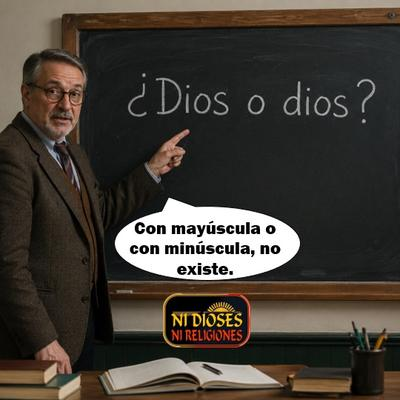

Es muy común observar en las redes sociales discusiones sobre este tema, argumentando los ateos que esta palabra debe escribirse con minúscula, mientras los creyentes reclaman que sea escrita con mayúscula, «por respeto». Sin embargo, este no es un asunto religioso ni filosófico, sino un tema de gramática y ortografía. Por lo que, para responder correctamente, debemos preguntarnos primero qué clase de palabra es «dios». ¿Se trata de un nombre común o de un nombre propio?


Según la RAE, nombre común es toda palabra «que se aplica a personas, animales o cosas que pertenecen a una misma clase, especie o familia, significando su naturaleza o sus cualidades»[1]. Es decir, toda palabra que designa a los miembros de una clase o categoría. Por ejemplo, las palabras «hombre», «ciudad», «perro» y «dios», son sustantivos comunes, porque pueden aplicarse a numerosos individuos de la misma clase. No es lo mismo cuando las palabras se aplican a seres o cosas específicos o de características más específicas. Así, por ejemplo, cuando hablamos de «un dios griego», «un dios azteca» o «los dioses nórdicos», estamos utilizando la palabra en su sentido genérico, por lo que debe escribirse con minúscula. En cambio, los nombres propios sirven para identificar e individualizar entidades concretas. Por tanto, se escriben con inicial mayúscula. Nombres como María, Ricardo o Barcelona, pertenecen a esta categoría.
Existe sin embargo un fenómeno lingüístico interesante: algunos nombres comunes o adjetivos sustantivados, pueden adquirir valor de nombre propio. Esto ocurre principalmente en los apodos y sobrenombres. Imaginemos a un hombre conocido por toda una comunidad por su extrema mezquindad. Si los habitantes del lugar dejan de llamarlo por su nombre y comienzan a identificarlo solamente como «el Tacaño», la palabra «tacaño» deja de funcionar como una descripción general, y pasa a identificar a una persona concreta. Y en ese contexto, adquiere valor de nombre propio, por lo que debe escribirse con mayúscula inicial.
Ocurre también en estos casos lo que conocemos como denominación antonomástica, una figura retórica que consiste en sustituir un nombre propio, por una expresión o cualidad que representa a esa persona. Se aplica especialmente cuando se usa la expresión «por antonomasia», para denotar que alguien o algo es el modelo perfecto o el más famoso de su clase. Ejemplos comunes son El Rey del Pop, que sustituye el nombre propio de Michael Jackson por la cualidad universal de su título, o La Meca del Cine, que designa a Hollywood como el lugar por excelencia o centro neurálgico de la industria cinematográfica.
Lo mismo podemos decir de ejemplos históricos, como «el Sabio», «el Libertador» o «el Conquistador». Originalmente son palabras comunes, pero el contexto las transforma en denominaciones identificadoras. Por tanto, desde el punto de vista lingüístico, se trata de nombres comunes empleados antonomásticamente, es decir, con función de nombre propio.
¿Y qué ocurre con la palabra «dios»? —Originalmente es un sustantivo común. Designa cualquier deidad, del mismo modo que «rey» designa cualquier monarca, o «presidente» cualquier gobernante electo. Así que, cuando se utiliza en sentido genérico, la norma exige la minúscula. No obstante, en las tradiciones monoteístas —específicamente el cristianismo, el judaísmo y el islam— la palabra «Dios» suele emplearse para designar un hipotético ser específico, que los creyentes de esas religiones consideran único y supremo. Por lo que, en ese uso concreto, la palabra deja de funcionar como una denominación genérica, y pasa a identificar un referente individual determinado. Este dios en particular, es convertido así por sus creyentes en «Dios por antonomasia», es decir, el calificativo más usual con que se le conoce, por ser el más famoso o paradigmático de los de su clase (entre los otros dioses)[2].
Más bien, para los creyentes monoteístas, «Dios» es como ellos conocen y diferencian al que consideran «único dios verdadero». Y como para enfatizar esta idea, prefieren no llamarlo por su verdadero nombre, en caso de que lo tenga, como el dios judeocristiano, que él mismo lo menciona en la Biblia: «Yo Jehová; este es mi nombre…» (Isaías 42:8). Por consiguiente, desde una perspectiva lingüística, puede afirmarse que «Dios» (con mayúscula) funciona como una denominación antonomástica, un sustantivo común que adquiere valor identificador, porque designa de forma exclusiva a un individuo considerado único. Algo muy similar a un apodo o sobrenombre.
El mecanismo es comparable al que observamos cuando alguien dice «el Rey» para referirse al monarca de su país, «el Presidente», para referirse al jefe del Estado electo, o el Libertador», para referirse a una figura concreta que tiene un nombre concreto. En todos esos casos, una palabra originalmente común deja de clasificar, para pasar a identificar. Es por esta razón que la ortografía académica considera correcto escribir «Dios» con mayúscula, cuando se refiere específicamente a la divinidad de las religiones monoteístas (aunque no se trate precisamente del mismo ser). Como vemos, no «por un respeto especial», sino por norma ortográfica y lingüística.
Aunque es importante señalar que a nosotros particularmente, nos da la impresión de que ese uso de mayúscula en el dios judeocristiano, como si se tratara del nombre propio de una entidad específica, existente y única, es más bien una forma de manipulación, puesto que, si observamos las traducciones bíblicas, el nombre Jehová o Yahvé (sobre todo en el Nuevo Testamento) tiende a desaparecer, para ser sustituido intencionalmente por «Dios», así, con mayúscula, como si fuera el nombre propio de su divinidad.
Sospechamos que esto ha sido parte de una estrategia de los traductores, con el objetivo de distraer al creyente cristiano de la imagen primitiva del dios tribal Yahvé-Jehová en que creían los hebreos, y sustituirlo mentalmente por otro «Dios» (cuyo nombre se omite intencionalmente), pero que tiene un alcance más universal. Y los redactores bíblicos parecen haber logrado su objetivo, puesto que con el tiempo se terminó utilizando ese sustantivo «Dios», como si se tratara del nombre propio de un supuesto dios único y verdadero. Y con ese «nombre» llegó incluso a ser identificado en los razonamientos «teológicos» y filosóficos. Incluso actualmente sigue debatiéndose sobre la existencia de «Dios», sin determinar antes de qué dios se trata (como si sólo hubiera uno).
Ahora bien, el hecho de que la mayúscula sea correcta, no significa que todos debamos adoptar la misma actitud discursiva frente al término. En nuestro caso particular, como ateos y críticos de las religiones, si bien reconocemos que la forma «Dios» con mayúscula se ajusta a la norma ortográfica cuando funciona como una especie de apodo, preferimos usarla además entre comillas, conscientes de que eso no responde a ninguna regla. Utilizamos las comillas libremente, porque cumplen una función distinta: expresan una intención discursiva particular. Las empleamos para marcar distancia crítica, e incluso cierta ironía, respecto al término. Con las comillas pretendemos recordar al lector que no estamos ante un nombre propio original y normal, como Yahvé o Jehová, sino ante un sustantivo común al que históricamente los creyentes terminaron otorgando un valor de nombre propio por antonomasia. O, dicho de otro modo, las comillas no indican una corrección gramatical, sino una actitud personal hacia la palabra.
Por supuesto, los creyentes tienen pleno derecho a escribir Dios con mayúscula y sin comillas, conforme a la norma ortográfica. Pero quienes observamos el fenómeno desde una perspectiva histórica, lingüística o crítica, también podemos utilizar recursos estilísticos para expresar nuestra posición frente a determinados conceptos.
Pero al final la cuestión gramatical es relativamente sencilla: cuando «dios» se emplea en sentido genérico, corresponde la minúscula; cuando «Dios» se utiliza para designar de forma específica a la divinidad de las religiones monoteístas, la mayúscula está justificada. Las comillas, por su parte, pertenecen al terreno de la intención discursiva y de la libertad expresiva del autor.
[Godless Freeman]
Comentarios
Comments powered by Disqus